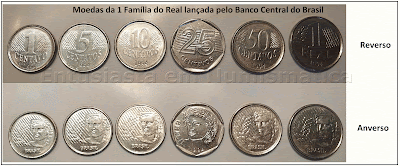
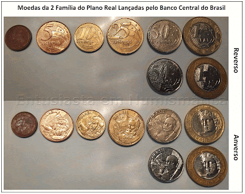

Catálogo de Moedas
Explore nosso catálogo de moedas históricas e raras, organizadas por período e origem.

Primeiras Família de Moedas do Plano Real
Primeira moeda cunhada do Plano Real, feita de inox

Segunda Família de Moedas do Plano Real
Faitas de varios marerias cobre, bronze, cuproníquel, aço inoxidável, alpaca e cuproníquel, bronze e aço inoxidável